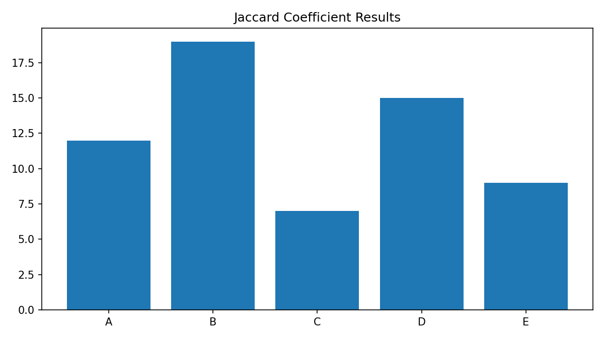

Weekly focus
The clustering unit introduced similarity measures, distance metrics and the logic of unsupervised learning. It was useful because it showed that not all machine learning tasks are about predicting a labelled outcome.
Commentary on learning
The Jaccard coefficient activity was valuable because it made similarity more concrete. It also prepared me for thinking about segmentation in a more disciplined way before using K-Means on the project data.
Artefact

Summary artefact for the Jaccard coefficient exercise.